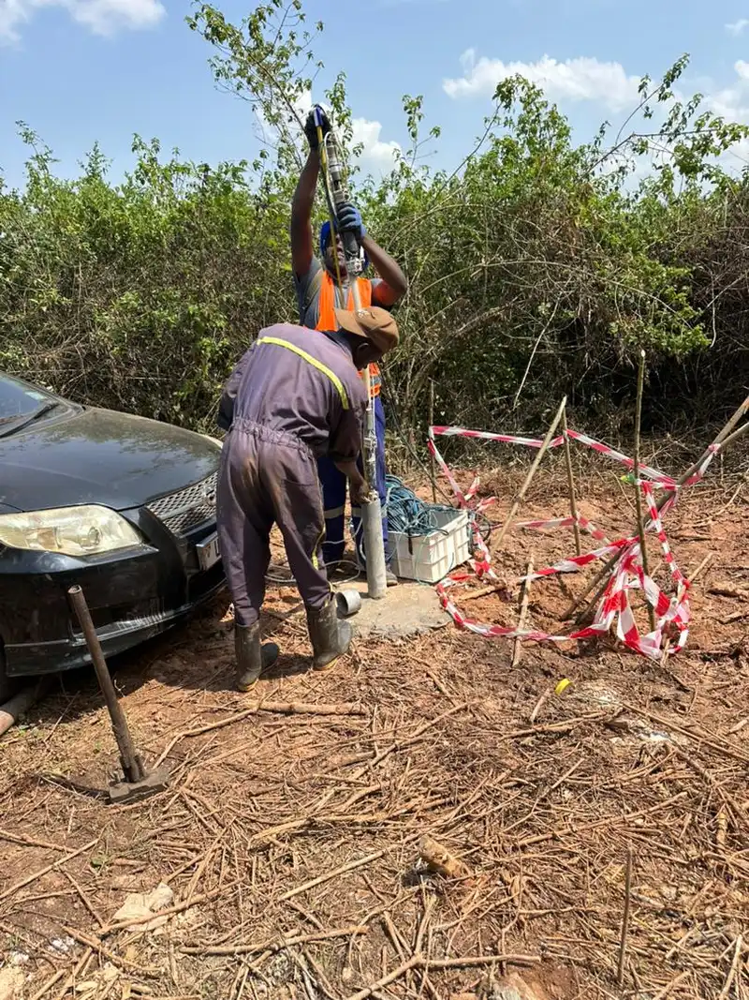

High-resolution, non-destructive imaging of the shallow subsurface with Ground Penetrating Radar. Locate utilities, assess pavements, find voids, and map buried features across Uganda and East Africa — without lifting a shovel.
Ground Penetrating Radar (GPR) is a non-destructive geophysical method that sends short pulses of high-frequency electromagnetic energy into the ground and records the echoes that bounce back from boundaries between materials with different electrical properties. Layered radargrams built from these echoes image the shallow subsurface in fine detail, revealing pipes, cables, voids, pavement structure, and buried objects in the top few metres.
A GPR survey in Uganda is the fastest way to map what lies beneath a road, slab, or compound before you dig. Unlike electromagnetic locators that only detect metallic utilities, GPR sees both metallic and non-metallic targets — plastic water pipes, concrete, and voids included — and shows their depth and geometry continuously along a line. In Uganda's lateritic and sandy soils, where conductivity is low, GPR produces particularly clear images.
Georesolve Africa operates GPR surveys across Uganda, Rwanda, Burundi, and the wider East African region for utility mapping, pavement assessment, void detection, archaeological screening, and concrete scanning on active construction and infrastructure sites.
Georesolve operates a multi-frequency Ground Penetrating Radar system configured for utility, pavement, and subsurface investigations.
| Component | Specification |
|---|---|
| Antenna | Multi-frequency GPR antenna array (e.g. 200, 400, 800 MHz) for shallow-to-intermediate depth imaging |
| Control unit | Digital GPR console with high sample rate and real-time data display |
| Positioning | Survey wheel / odometer and GNSS for continuous, georeferenced profiling |
| Survey platform | Cart-mounted for pavements and compounds; vehicle-towed for roads and corridors |
| Measured parameter | Two-way electromagnetic travel time versus depth |
| Derived products | Radargrams, depth slices, utility/feature maps, pavement layer thicknesses |
For utility detection where conductive targets dominate, Georesolve pairs GPR with electromagnetic (EM) locating to produce a complete subsurface utility map before excavation.
Locate metallic and non-metallic water, sewer, power, and telecom services before excavation.
Measure asphalt and base-layer thickness and detect delamination for road and airfield management.
Identify subsurface voids, washouts, and sinkhole precursors beneath roads and structures.
Locate rebar, conduits, and post-tension cables, and measure cover depth, within slabs and walls.
Non-invasive mapping of buried walls, pits, and features at heritage and development sites.
Locate tanks, drums, and unknown metallic or non-metallic objects for environmental and clearance work.
Every GPR survey is delivered as a complete, interpretation-ready data package:

Georesolve deployed Ground Penetrating Radar to support a safe-site upgrade at an industrial estate in Kampala. The objective was to map the existing shallow subsurface — both metallic and non-metallic utilities — and to assess pavement structure ahead of planned excavation and resurfacing.
GPR cart surveys delivered continuous utility maps with depths and clear pavement-layer thicknesses across the compound. Combined with electromagnetic locating, the dataset gave the client a complete picture of what lay beneath the surface, allowing excavation to proceed without strikes and informing the pavement rehabilitation design.
Ground Penetrating Radar (GPR) is a non-destructive geophysical method that sends short pulses of high-frequency electromagnetic energy into the ground and records the echoes from boundaries between materials with different electrical properties. The resulting radar profile images pipes, cables, voids, pavement layers, and buried objects in the top few metres without excavation.
GPR detects metallic and non-metallic utilities (water, sewer, power, telecom), pavement and slab thickness, subsurface voids and sinkholes, buried tanks and drums, geological layering, and anomalies within concrete such as rebar and conduits. In Uganda's lateritic and sandy soils GPR performs particularly well, giving clear images of the shallow subsurface.
Depth of investigation depends on antenna frequency and ground conductivity. High-frequency antennas (e.g. 500–1000 MHz) resolve centimetre-scale detail to 1–3 m — ideal for utilities and pavements. Lower-frequency antennas (e.g. 100–200 MHz) reach 5–10 m for geological profiling but with lower resolution. Georesolve selects the antenna to match your target depth and detail.
They are complementary. Electromagnetic locators only detect metallic (conductive) utilities and cannot see plastic pipes or concrete. GPR images both metallic and non-metallic targets continuously along a line, showing depth and geometry. Georesolve often combines GPR with EM locating for a complete utility map before any excavation.
Very fast. A GPR cart is pushed or driven along the surface, collecting a continuous profile in real time. Road and pavement surveys can cover kilometres per day, and building slabs can be scanned room by room. Data is processed on site, so results are available almost immediately — ideal for live infrastructure and occupied facilities.
You receive processed radar depth slices and profile sections, interpreted utility and feature maps (often in CAD/GIS), pavement layer thicknesses, void and anomaly locations with depths, and a technical report. Deliverables are provided in formats compatible with QGIS, AutoCAD, and asset-management systems.
Talk to Georesolve Africa about a Ground Penetrating Radar survey for utility mapping, pavement assessment, or void detection on your site in Uganda and East Africa.
Request a Quote